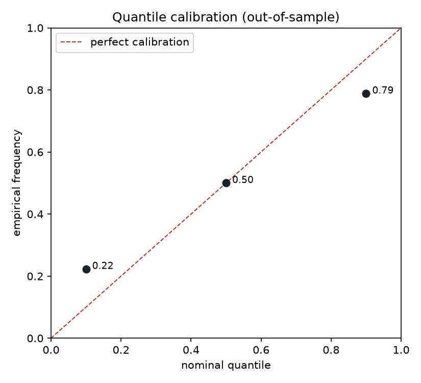
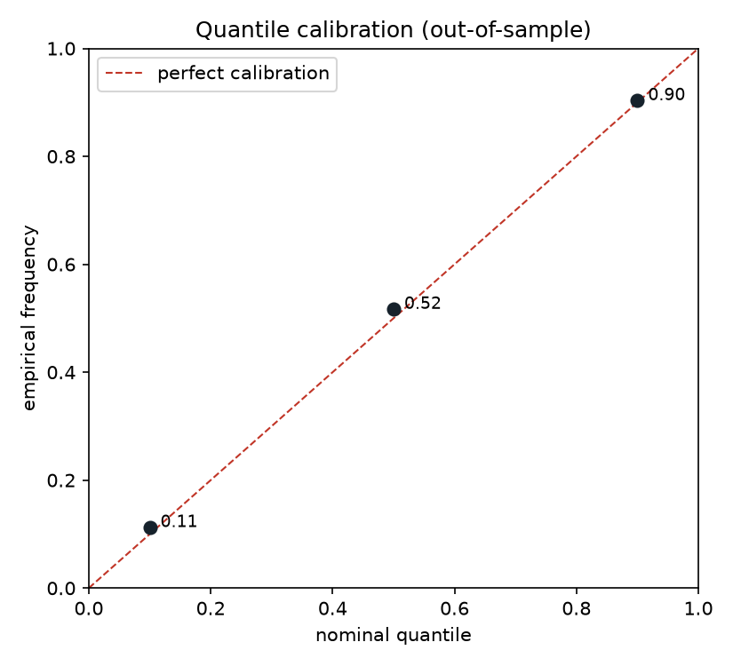
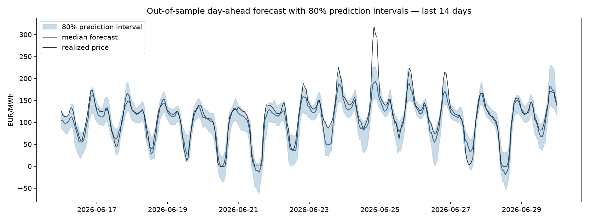

Electricity prices are a strange and wonderful time series. In three and a half years of hourly Swiss day-ahead data (2023–2026), the mean price is 97 EUR/MWh — but the minimum is −464. Negative prices occur in 2.8% of all hours: moments when producers pay consumers to take power off their hands, because on a grid without storage, someone must absorb the surplus of a windy night or a sunny noon. The distribution is bimodal, the intraday shape flips between winter and summer, and the volatility would make an equity index blush.
In other words: an ideal playground for the statistical habits of experimental particle physics — weak signals, heavy tails, non-stationarity, and a hard requirement that you quantify how much you don't know. I spent a few evenings building a probabilistic forecaster for this market, on public ENTSO-E data. This post is about the part that went wrong in an instructive way: my model's uncertainty estimates were lying, and the diagnosis-and-fix is the most transferable lesson of the project.
The setup
Every day at noon, the day-ahead auction fixes tomorrow's 24 hourly prices. The task: at gate closure, predict each hour's price — not as a point, but as a distribution, summarised by the 10th, 50th and 90th percentiles. Inputs: lagged Swiss, German and French prices; the Swiss load forecast; German wind and solar generation forecasts (Germany's renewable fleet is the region's price-setter — its midday solar surplus is what drags Swiss prices negative through the interconnectors).
One discipline from physics ported directly: blinding. Every feature must be computable strictly before the auction — price lags of at least 24 hours, rolling windows shifted to end yesterday, forecast series only if published pre-auction. In machine-learning language this is leakage prevention; the twist I'd advocate for is enforcing it mechanically. The repository's unit tests perturb "today's" prices and assert that today's features don't move. A no-look-ahead policy enforced by the framework, not by good intentions.
A hierarchy of models, and an honest ladder
A model earns its complexity by beating the tier below, out-of-sample. The ladder: a naive forecast (tomorrow = same hour yesterday), a seasonal naive (= same hour last week), a LightGBM point forecast, and LightGBM quantile regression. Evaluation is expanding-window walk-forward — train on year one, predict a month, grow the window, refit, repeat across two and a half years. Never shuffled cross-validation on a time series: shuffling trains on the future to predict the past.
| Model | MAE (EUR/MWh) | 68% CI | Coverage of 80% PI |
|---|---|---|---|
| Naive (D-1) | 16.28 | [15.86, 16.68] | – |
| Seasonal naive (D-7) | 19.07 | [18.54, 19.48] | – |
| LightGBM (point) | 11.55 | [11.31, 11.78] | – |
| LightGBM (quantile) | 11.42 | [11.16, 11.67] | 56.5% |
| LightGBM + CQR | 12.75 | [12.46, 13.02] | 79.1% |
Two remarks on the table. First, the confidence intervals on MAE come from a block bootstrap (24-hour blocks): hourly errors are autocorrelated, and resampling single hours would fake independence and shrink the error bars — the forecasting equivalent of ignoring correlated systematics. Second, the D-1 naive beats the D-7 seasonal naive: in this market, recent information outweighs seasonal memory.
LightGBM improves on the naive baseline by 29% in MAE, with non-overlapping intervals. So far, a fine but unremarkable result.
The model was overconfident — and said nothing
Then the check most projects skip: are the intervals honest? An 80% prediction interval should contain the realised price 80% of the time. Mine managed 56.5%.

The calibration plot localises the failure precisely: well-calibrated in location, overconfident in scale. The model knows where prices centre but underestimates how much they disperse — it has learned typical weeks, and is blindsided by the regime jumps that make this market interesting in the first place. Any physicist will recognise the syndrome: the fit's central value is fine, the error bars are underestimated.
An in-situ calibration: conformalized quantile regression
The fix is a technique I wish I had met earlier: conformalized quantile regression (Romano, Patterson & Candès, 2019). Hold out the most recent 90 days of each training window as a calibration set. On it, measure the conformity scores — how far outside its own intervals the model actually lands. Take the appropriately corrected 80th percentile of those scores, and widen every future interval by exactly that margin. Distribution-free, no retraining, about thirty lines of code.
This is, move for move, an in-situ calibration: don't trust the simulation's resolution — measure it in a control region and propagate it. Coverage went from 56.5% to 79.1% against the 80% target.


What it costs, and what it still can't do
Honest accounting requires the fine print. The conformal model's MAE is slightly worse (12.75 vs 11.42): the calibration split sacrifices training data, so the median degrades a little. Nothing forces one model to do both jobs — in production you would take point forecasts from the full-data model and intervals from the conformal one.
More fundamentally, vanilla CQR guarantees marginal coverage — 80% on average over all hours — not conditional coverage in every regime. The correction is a constant margin, so spike days still escape the band, as 25 June shows above. Adaptive conformal methods, which let the margin respond to the current regime, are the natural next iteration. And the feature set omits gas and CO₂ prices, a known driver of the level of the supply stack.
A forecast without calibrated uncertainty is an opinion with decimals. The most useful thing this project produced is not the 29% MAE improvement — it's the plot that caught the model overstating its own confidence, and a cheap, principled way to make it honest.
Code, tests, and every figure: github.com/dialloboye/swiss-power-forecast. The data is free — ENTSO-E's transparency platform is a gift to anyone who wants a genuinely hard time series to practise on.